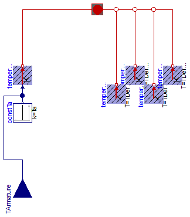

Extends from Modelica.Icons.VariantsPackage (Icon for package containing variants).
| Name | Description |
|---|---|
| Partial thermal port of DC machines | |
| Partial thermal ambient for DC machines | |
| Partial power balance of DC machines | |
| Thermal port of DC machine with permanent magnets | |
| Power balance of DC machines with permanent magnet | |
| Thermal port of DC machine with electrical excitation | |
| Power balance of DC machines with electrical excitation | |
| Thermal port of DC machine with series excitation | |
| Power balance of DC machines with series excitation | |
| Thermal port of DC machine with compound excitation | |
| Power balance of DC machines with compound excitation |
 Modelica.Electrical.Machines.Interfaces.DCMachines.PartialThermalPortDCMachines
Modelica.Electrical.Machines.Interfaces.DCMachines.PartialThermalPortDCMachines

| Type | Name | Description |
|---|---|---|
| HeatPort_a | heatPortArmature | Heat port of armature |
| HeatPort_a | heatPortCore | Heat port of (optional) core losses |
| HeatPort_a | heatPortStrayLoad | Heat port of (optional) stray losses |
| HeatPort_a | heatPortFriction | Heat port of (optional) friction losses |
| HeatPort_a | heatPortBrush | Heat port of (optional) brush losses |
partial connector PartialThermalPortDCMachines "Partial thermal port of DC machines"Modelica.Thermal.HeatTransfer.Interfaces.HeatPort_a heatPortArmature "Heat port of armature"; Modelica.Thermal.HeatTransfer.Interfaces.HeatPort_a heatPortCore "Heat port of (optional) core losses"; Modelica.Thermal.HeatTransfer.Interfaces.HeatPort_a heatPortStrayLoad "Heat port of (optional) stray losses"; Modelica.Thermal.HeatTransfer.Interfaces.HeatPort_a heatPortFriction "Heat port of (optional) friction losses"; Modelica.Thermal.HeatTransfer.Interfaces.HeatPort_a heatPortBrush "Heat port of (optional) brush losses"; end PartialThermalPortDCMachines;

| Type | Name | Default | Description |
|---|---|---|---|
| Boolean | useTemperatureInputs | false | If true, temperature inputs are used; else, temperatures are constant |
| Temperature | Ta | Temperature of armature [K] | |
| PartialThermalPortDCMachines | thermalPort | redeclare Machines.Interface... |
| Type | Name | Description |
|---|---|---|
| PartialThermalPortDCMachines | thermalPort | |
| input RealInput | TArmature | Temperature of armature |
partial model PartialThermalAmbientDCMachines
"Partial thermal ambient for DC machines"
parameter Boolean useTemperatureInputs=false
"If true, temperature inputs are used; else, temperatures are constant";
constant Modelica.SIunits.Temperature TDefault=293.15 "Default temperature";
parameter Modelica.SIunits.Temperature Ta(start=TDefault)
"Temperature of armature";
output Modelica.SIunits.HeatFlowRate Q_flowArmature = temperatureArmature.port.Q_flow
"Heat flow rate of armature";
output Modelica.SIunits.HeatFlowRate Q_flowCore = temperatureCore.port.Q_flow
"Heat flow rate of core losses";
output Modelica.SIunits.HeatFlowRate Q_flowStrayLoad = temperatureStrayLoad.port.Q_flow
"Heat flow rate of stray load losses";
output Modelica.SIunits.HeatFlowRate Q_flowFriction = temperatureFriction.port.Q_flow
"Heat flow rate of friction losses";
output Modelica.SIunits.HeatFlowRate Q_flowBrush = temperatureBrush.port.Q_flow
"Heat flow rate of brushes";
replaceable Machines.Interfaces.DCMachines.PartialThermalPortDCMachines
thermalPort;
Modelica.Thermal.HeatTransfer.Sources.PrescribedTemperature temperatureArmature;
Modelica.Thermal.HeatTransfer.Sources.FixedTemperature temperatureCore(final T=
TDefault);
Modelica.Thermal.HeatTransfer.Sources.FixedTemperature temperatureStrayLoad(final T=
TDefault);
Modelica.Thermal.HeatTransfer.Sources.FixedTemperature temperatureFriction(final T=
TDefault);
Modelica.Blocks.Interfaces.RealInput TArmature if
useTemperatureInputs
"Temperature of armature";
Modelica.Blocks.Sources.Constant constTa(final k=Ta) if not useTemperatureInputs;
Modelica.Thermal.HeatTransfer.Sources.FixedTemperature temperatureBrush(final T=
TDefault);
equation
connect(constTa.y, temperatureArmature.T);
connect(TArmature, temperatureArmature.T);
connect(temperatureArmature.port, thermalPort.heatPortArmature);
connect(temperatureBrush.port, thermalPort.heatPortBrush);
connect(temperatureCore.port, thermalPort.heatPortCore);
connect(temperatureStrayLoad.port, thermalPort.heatPortStrayLoad);
connect(temperatureFriction.port, thermalPort.heatPortFriction);
end PartialThermalAmbientDCMachines;
 Modelica.Electrical.Machines.Interfaces.DCMachines.PartialPowerBalanceDCMachines
Modelica.Electrical.Machines.Interfaces.DCMachines.PartialPowerBalanceDCMachines
Extends from Modelica.Icons.Record (Icon for records).
partial record PartialPowerBalanceDCMachines "Partial power balance of DC machines" extends Modelica.Icons.Record; Modelica.SIunits.Power powerArmature "Electrical armature power"; Modelica.SIunits.Power powerMechanical "Mechanical power"; Modelica.SIunits.Power powerInertiaStator "Stator inertia power"; Modelica.SIunits.Power powerInertiaRotor "Rotor inertia power"; Modelica.SIunits.Power lossPowerTotal "Total loss power"; Modelica.SIunits.Power lossPowerArmature "Armature copper losses"; Modelica.SIunits.Power lossPowerCore "Core losses"; Modelica.SIunits.Power lossPowerStrayLoad "Stray load losses"; Modelica.SIunits.Power lossPowerFriction "Friction losses"; Modelica.SIunits.Power lossPowerBrush "Brush losses";end PartialPowerBalanceDCMachines;
 Modelica.Electrical.Machines.Interfaces.DCMachines.ThermalPortDCPM
Modelica.Electrical.Machines.Interfaces.DCMachines.ThermalPortDCPM

Extends from Machines.Interfaces.DCMachines.PartialThermalPortDCMachines (Partial thermal port of DC machines).
| Type | Name | Description |
|---|---|---|
| HeatPort_a | heatPortArmature | Heat port of armature |
| HeatPort_a | heatPortCore | Heat port of (optional) core losses |
| HeatPort_a | heatPortStrayLoad | Heat port of (optional) stray losses |
| HeatPort_a | heatPortFriction | Heat port of (optional) friction losses |
| HeatPort_a | heatPortBrush | Heat port of (optional) brush losses |
| HeatPort_a | heatPortPermanentMagnet | Heat port of permanent magnets |
connector ThermalPortDCPM "Thermal port of DC machine with permanent magnets" extends Machines.Interfaces.DCMachines.PartialThermalPortDCMachines;Modelica.Thermal.HeatTransfer.Interfaces.HeatPort_a heatPortPermanentMagnet "Heat port of permanent magnets"; end ThermalPortDCPM;
 Modelica.Electrical.Machines.Interfaces.DCMachines.PowerBalanceDCPM
Modelica.Electrical.Machines.Interfaces.DCMachines.PowerBalanceDCPM
Extends from Machines.Interfaces.DCMachines.PartialPowerBalanceDCMachines (Partial power balance of DC machines).
| Type | Name | Default | Description |
|---|---|---|---|
| Power | lossPowerTotal | lossPowerArmature + lossPowe... | Total loss power [W] |
record PowerBalanceDCPM
"Power balance of DC machines with permanent magnet"
extends Machines.Interfaces.DCMachines.PartialPowerBalanceDCMachines(
final lossPowerTotal = lossPowerArmature + lossPowerCore + lossPowerStrayLoad + lossPowerFriction + lossPowerBrush +
lossPowerPermanentMagnet);
Modelica.SIunits.Power lossPowerPermanentMagnet "Permanent magnet losses";
end PowerBalanceDCPM;
 Modelica.Electrical.Machines.Interfaces.DCMachines.ThermalPortDCEE
Modelica.Electrical.Machines.Interfaces.DCMachines.ThermalPortDCEE
Extends from Machines.Interfaces.DCMachines.PartialThermalPortDCMachines (Partial thermal port of DC machines).
| Type | Name | Description |
|---|---|---|
| HeatPort_a | heatPortArmature | Heat port of armature |
| HeatPort_a | heatPortCore | Heat port of (optional) core losses |
| HeatPort_a | heatPortStrayLoad | Heat port of (optional) stray losses |
| HeatPort_a | heatPortFriction | Heat port of (optional) friction losses |
| HeatPort_a | heatPortBrush | Heat port of (optional) brush losses |
| HeatPort_a | heatPortExcitation | Heat port of (shunt) excitation |
connector ThermalPortDCEE "Thermal port of DC machine with electrical excitation" extends Machines.Interfaces.DCMachines.PartialThermalPortDCMachines;Modelica.Thermal.HeatTransfer.Interfaces.HeatPort_a heatPortExcitation "Heat port of (shunt) excitation"; end ThermalPortDCEE;
 Modelica.Electrical.Machines.Interfaces.DCMachines.PowerBalanceDCEE
Modelica.Electrical.Machines.Interfaces.DCMachines.PowerBalanceDCEE
Extends from Machines.Interfaces.DCMachines.PartialPowerBalanceDCMachines (Partial power balance of DC machines).
| Type | Name | Default | Description |
|---|---|---|---|
| Power | lossPowerTotal | lossPowerArmature + lossPowe... | Total loss power [W] |
record PowerBalanceDCEE
"Power balance of DC machines with electrical excitation"
extends Machines.Interfaces.DCMachines.PartialPowerBalanceDCMachines(
final lossPowerTotal = lossPowerArmature + lossPowerCore + lossPowerStrayLoad + lossPowerFriction + lossPowerBrush +
lossPowerExcitation);
Modelica.SIunits.Power powerExcitation "Electrical (shunt) excitation power";
Modelica.SIunits.Power lossPowerExcitation "Excitation losses";
end PowerBalanceDCEE;
 Modelica.Electrical.Machines.Interfaces.DCMachines.ThermalPortDCSE
Modelica.Electrical.Machines.Interfaces.DCMachines.ThermalPortDCSE
Extends from Machines.Interfaces.DCMachines.PartialThermalPortDCMachines (Partial thermal port of DC machines).
| Type | Name | Description |
|---|---|---|
| HeatPort_a | heatPortArmature | Heat port of armature |
| HeatPort_a | heatPortCore | Heat port of (optional) core losses |
| HeatPort_a | heatPortStrayLoad | Heat port of (optional) stray losses |
| HeatPort_a | heatPortFriction | Heat port of (optional) friction losses |
| HeatPort_a | heatPortBrush | Heat port of (optional) brush losses |
| HeatPort_a | heatPortSeriesExcitation | Heat port of series excitation |
connector ThermalPortDCSE "Thermal port of DC machine with series excitation" extends Machines.Interfaces.DCMachines.PartialThermalPortDCMachines;Modelica.Thermal.HeatTransfer.Interfaces.HeatPort_a heatPortSeriesExcitation "Heat port of series excitation"; end ThermalPortDCSE;
 Modelica.Electrical.Machines.Interfaces.DCMachines.PowerBalanceDCSE
Modelica.Electrical.Machines.Interfaces.DCMachines.PowerBalanceDCSE
Extends from Machines.Interfaces.DCMachines.PartialPowerBalanceDCMachines (Partial power balance of DC machines).
| Type | Name | Default | Description |
|---|---|---|---|
| Power | lossPowerTotal | lossPowerArmature + lossPowe... | Total loss power [W] |
record PowerBalanceDCSE
"Power balance of DC machines with series excitation"
extends Machines.Interfaces.DCMachines.PartialPowerBalanceDCMachines(
final lossPowerTotal = lossPowerArmature + lossPowerCore + lossPowerStrayLoad + lossPowerFriction + lossPowerBrush +
lossPowerSeriesExcitation);
Modelica.SIunits.Power powerSeriesExcitation
"Electrical series excitation power";
Modelica.SIunits.Power lossPowerSeriesExcitation "Series excitation losses";
end PowerBalanceDCSE;
 Modelica.Electrical.Machines.Interfaces.DCMachines.ThermalPortDCCE
Modelica.Electrical.Machines.Interfaces.DCMachines.ThermalPortDCCE
Extends from Machines.Interfaces.DCMachines.PartialThermalPortDCMachines (Partial thermal port of DC machines).
| Type | Name | Description |
|---|---|---|
| HeatPort_a | heatPortArmature | Heat port of armature |
| HeatPort_a | heatPortCore | Heat port of (optional) core losses |
| HeatPort_a | heatPortStrayLoad | Heat port of (optional) stray losses |
| HeatPort_a | heatPortFriction | Heat port of (optional) friction losses |
| HeatPort_a | heatPortBrush | Heat port of (optional) brush losses |
| HeatPort_a | heatPortShuntExcitation | Heat port of (shunt) excitation |
| HeatPort_a | heatPortSeriesExcitation | Heat port of series excitation |
connector ThermalPortDCCE "Thermal port of DC machine with compound excitation" extends Machines.Interfaces.DCMachines.PartialThermalPortDCMachines;Modelica.Thermal.HeatTransfer.Interfaces.HeatPort_a heatPortShuntExcitation "Heat port of (shunt) excitation"; Modelica.Thermal.HeatTransfer.Interfaces.HeatPort_a heatPortSeriesExcitation "Heat port of series excitation"; end ThermalPortDCCE;
 Modelica.Electrical.Machines.Interfaces.DCMachines.PowerBalanceDCCE
Modelica.Electrical.Machines.Interfaces.DCMachines.PowerBalanceDCCE
Extends from Machines.Interfaces.DCMachines.PartialPowerBalanceDCMachines (Partial power balance of DC machines).
| Type | Name | Default | Description |
|---|---|---|---|
| Power | lossPowerTotal | lossPowerArmature + lossPowe... | Total loss power [W] |
record PowerBalanceDCCE
"Power balance of DC machines with compound excitation"
extends Machines.Interfaces.DCMachines.PartialPowerBalanceDCMachines(
final lossPowerTotal = lossPowerArmature + lossPowerCore + lossPowerStrayLoad + lossPowerFriction + lossPowerBrush +
lossPowerShuntExcitation + lossPowerSeriesExcitation);
Modelica.SIunits.Power powerShuntExcitation
"Electrical (shunt) excitation power";
Modelica.SIunits.Power powerSeriesExcitation
"Electrical series excitation power";
Modelica.SIunits.Power lossPowerShuntExcitation "(Shunt) excitation losses";
Modelica.SIunits.Power lossPowerSeriesExcitation "Series excitation losses";
end PowerBalanceDCCE;